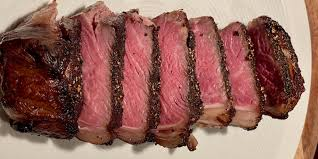

Home
Steak

Description
Prep Time: 10 min
Cook Time: 8 min
Mouth-watering steak better than grilled! This recipe for cast iron seared steak will have you forgetting about the grill.
Ingredients
- 2x striplion steaks
- 2x tablespoons of butter
- salt and black pepper
- Optional:2x fresh thyme sprigs
Steps
- Let steaks stand at room temperature for 30 min.
- Season steaks on both sides with a generous amount of salt and pepper.
- Heat oil coated cast iron skillet over medium-high heat.
- Cook steaks for 2-3 minutes per side (or until seared).
- Reduce heat to medium-low and add butter and thyme.
- Cook for 2 more minutes, basting steaks continually.
- Let steaks rest for 10 mins prior to eating.